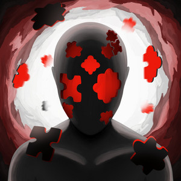
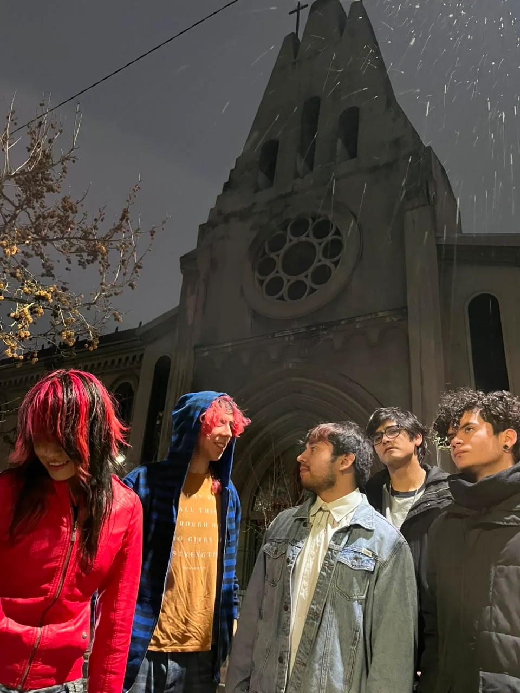
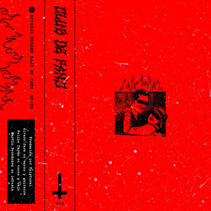
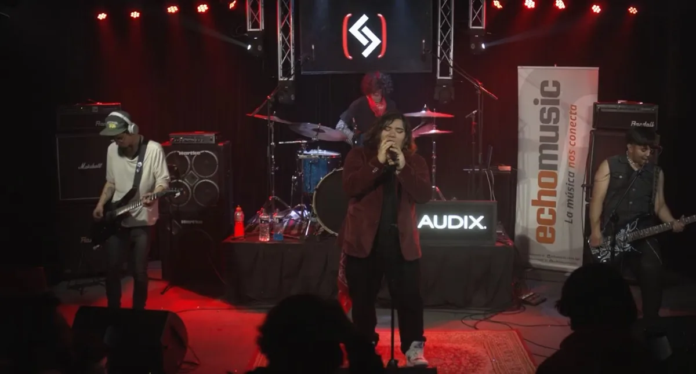
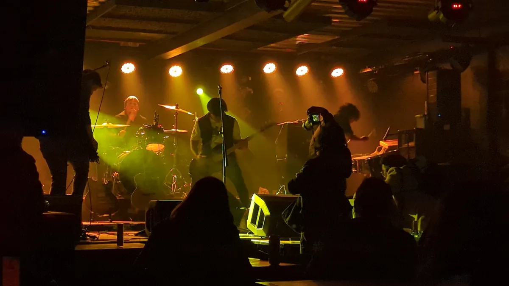
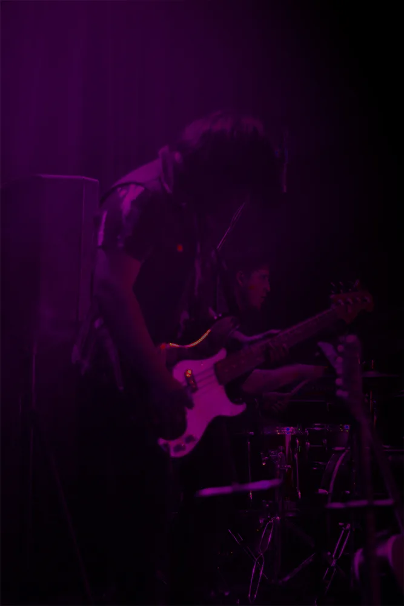

R.I.PClouded
bajista / coros · 2022 – 2024 · indie rock / punk
▶ "Reflejo" (reproductor de Spotify)
boceto v5: ENTER → hackeo de D'LIRIA → audio_lab. Prueba los 3 colores →
audio_lab.exe — ★彡 VANZY AUDIO LAB 彡★
audio_lab.exe · best viewed at 1024×768
⚠ ATENCIÓN: ESTA TRANSMISIÓN FUE INTERVENIDA ⚠
— el primer disco viene. no le digas a nadie.
C:\VANZY\música\banda_actual

RECC:\VANZY\música\bandas_muertas — en el cielo del rock

R.I.Pbajista / coros · 2022 – 2024 · indie rock / punk

R.I.Pbajo / voz · 2024 · alternative
C:\VANZY\música\mis_cds
mi disco favorito… y no lo tengo en CD. lo descargué entero jaja
C:\VANZY\música\tocatas

CREAROCK — live

RBX — caos

BATUTA — 2023
C:\VANZY\música\favoritas